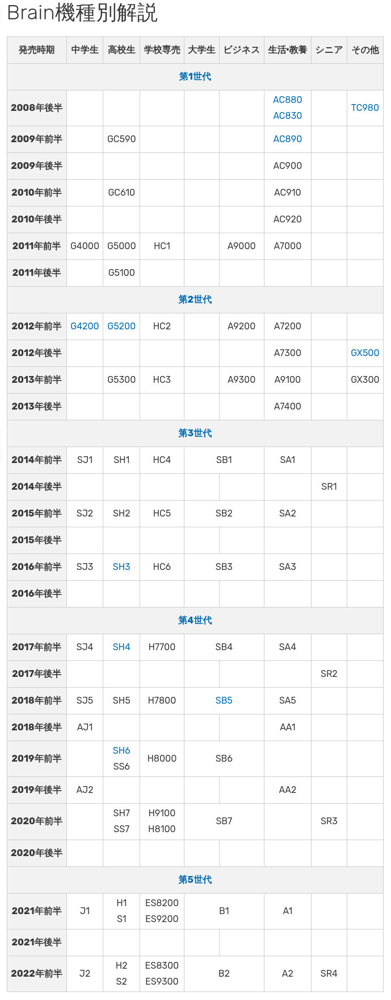

參考資訊：
https://brain.fandom.com/ja/wiki/Brain%E6%A9%9F%E7%A8%AE%E5%88%A5%E8%A7%A3%E8%AA%AC

| 第1世代 | |
|---|---|
| CPU | TMPA910CRAXBG ARM926EJ-S (Armv5TEJ) |
| RAM | 64MB |
| Touch | 4182A |
| Main Screen | 5.0" 480×320 |
| Sub Screen | 128x98 |
| 第2世代 | |
| CPU | Freescale i.MX28 ARM926EJ-S (Armv5TEJ) |
| RAM | 128MB |
| Touch | SX8650 |
| Main Screen | 5.0" 480×320 |
| Sub Screen | 240x120 |
| 第3世代 | |
| CPU | Freescale i.MX28 ARM926EJ-S (Armv5TEJ) |
| RAM | 128MB |
| Screen | 5.2" ~ 5.5" 854x480 |
| 第4世代 | |
| CPU | Freescale i.MX28 ARM926EJ-S (Armv5TEJ) |
| RAM | 128MB |
| Screen | 5.2" ~ 5.5" 854x480 |
| 第5世代 | |
| CPU | NXP i.MX 7 ULP Cortex-A7@720 MHz (Armv7-A) + Cortex-M4@200 MHz (Armv7E-M) |
| GPU | Vivante GC7000 |
| RAM | 128MB (LPDDR2 400MHz) |
| Screen | 5.2" ~ 5.5" 854x480 |